-

Chute brutale de la température de l’eau : les seiches internes du Léman
En été, le lac a deux couches, et le vent peut faire basculer la frontière entre elles. Ce que dit Wikipédia des seiches internes du Léman, et ce que cela peut expliquer au bord de l’eau.
Lire l’article → -

Le brassage du lac : pourquoi les hivers froids comptent pour le Léman
Chaque fin d’année, les eaux du lac peuvent se mélanger. Ce qu’est le brassage, pourquoi il faut des hivers très froids, et ce qui s’est passé en 2017, d’après Wikipédia et la CIPEL.
-
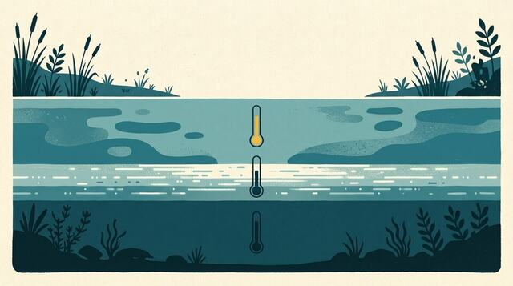
Thermocline et stratification : pourquoi la surface du lac est plus chaude
Par temps chaud, un lac forme trois couches : une chaude en surface, une zone de transition, une froide en profondeur. Ce que sont l’épilimnion, la thermocline et l’hypolimnion.
-

Le Léman se réchauffe : +2 °C en surface en 46 ans
La température moyenne des eaux de surface du Léman est passée de 10,9 °C en 1970 à 12,9 °C en 2016. Ce que cela change pour le lac, d’après Wikipédia.
-

Le foehn en Suisse : un vent chaud et sec venu du sud
D’où vient le foehn, pourquoi il est sec et chaud, de combien il réchauffe l’air, et l’épisode de novembre 1982 à Zurich, d’après Wikipédia.
-

Le niveau du Léman : qui le règle, entre quelles cotes
Depuis 1884 le niveau du Léman est régulé entre 371,7 et 372,3 mètres. Avant, il variait de 1,54 m entre été et hiver. Les cotes de l’accord de 1984, d’après Wikipédia.
-

Les seiches du Léman : quand le lac se balance
Une seiche est une onde stationnaire du lac : le niveau monte d’un côté pendant qu’il descend de l’autre. Période, hauteur, qui l’a étudiée, d’après Wikipédia.
-

Le microclimat du Léman : comment le lac adoucit l’hiver et rafraîchit l’été
Par la masse d’eau qu’il contient, le Léman crée un microclimat autour de lui. Ce que dit Wikipédia de ses effets, de Montreux à la bise.
-

Les vents du Léman : bise, vaudaire, joran et séchard
Quatre vents font le Léman : la bise, la vaudaire, le joran et le séchard. D’où ils soufflent, à quelle force, quand, et ce qu’ils font à l’eau, d’après Wikipédia.
-

Température des lacs suisses aujourd’hui : le classement du matin
Le classement du matin des lacs suivis par Mon Lac, d’après le modèle Alplakes de l’Eawag, mis à jour chaque jour, et comment lire ces écarts.
-
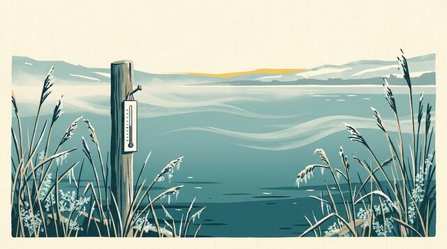
Bienfaits du bain froid : ce que disent les études, et ce qu’elles ne disent pas
Sommeil, qualité de vie, humeur, rhumes, circulation : ce que montrent une méta-analyse de 2025 et une revue de référence sur l’eau froide, ce qu’en dit une assurance suisse, et pour qui c’est déconseillé.
-

Respiration dans l’eau froide : gérer le réflexe de souffle au moment d’entrer
Le réflexe de souffle, l’hyperventilation incontrôlable, la panique : ce que décrivent la Outdoor Swimming Society, Helsana et une revue de référence, et comment entrer pour laisser la respiration se calmer.
-

Programme de 4 semaines pour débuter le bain d’hiver, pas à pas
Quatre semaines pour passer de quelques secondes à quelques minutes dans l’eau froide, avec la règle de la Société Suisse de Sauvetage comme plafond. Une proposition de Mon Lac, pas un protocole médical.
-

Néoprène pour le bain d’hiver : combinaison, gants, chaussons, ce que ça change
À quoi sert une combinaison en eau froide, quelle épaisseur selon la température d’après la RLSS, pourquoi elle n’empêche ni le choc du froid ni l’hypothermie, et les gants et chaussons dont parle Helsana.
-

Bain d’hiver en groupe en Suisse : cours, ateliers et rendez-vous pour débuter
Eisbadi d’Arosa, cours à Davos et à Saint-Moritz, Seebad Utoquai à Zurich, Pâquis à Genève : où l’on peut apprendre le bain d’hiver avec d’autres, et pourquoi il vaut mieux ne pas y aller seul.
-

Coupe de Noël 2026 à Genève : dates, parcours, inscriptions et conseils
La 88e Coupe de Noël se nage les 19 et 20 décembre 2026 dans la rade de Genève : 100 m le long du Jardin anglais. Programme, catégories, prix, accès, vestiaires et préparation, d’après le site officiel.
-

Température de l’eau du lac de Brienz aujourd’hui, et d’où vient le chiffre
La température de l’eau du lac de Brienz à 70 cm sous la surface, pour les 4 plages suivies, mise à jour toutes les trois heures. D’où vient le chiffre et ce qu’il ne dit pas.
-
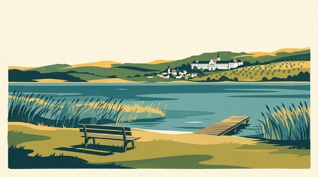
Où se baigner dans le lac de Baldegg : les 2 plages, avec l’eau du matin
Les 2 plages suivies du lac de Baldegg : liste complète avec la température de l’eau du matin, où manger et boire, où louer un bateau ou un paddle.
-

Où se baigner dans le lac de Constance – Untersee : les 4 plages, avec l’eau du matin
Les 4 plages suivies du lac de Constance – Untersee : liste complète avec la température de l’eau du matin, où manger et boire, où louer un bateau ou un paddle.
-
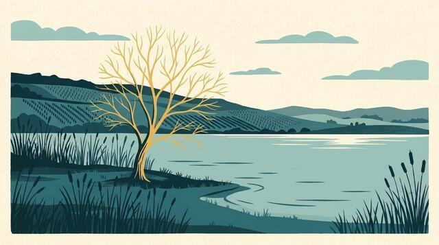
Température de l’eau du lac de Morat aujourd’hui, plage par plage
La température de l’eau du lac de Morat à 70 cm sous la surface, devant chacune des 4 plages suivies, mise à jour toutes les trois heures. D’où vient le chiffre et ce qu’il ne dit pas.
-

Bain d’hiver dans les lacs de Neuchâtel, de Bienne et de Morat : plages et saunas
Bain d’hiver dans les lacs de Neuchâtel, de Bienne et de Morat : la règle de durée de la SSS, l’eau du jour plage par plage, les plages suivies et les saunas au bord de l’eau.
-
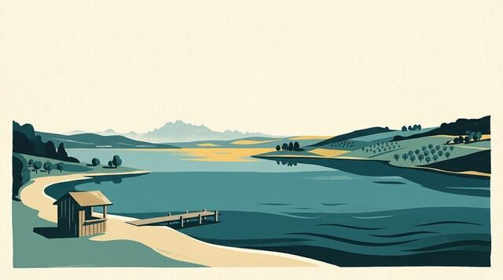
Où se baigner dans le lac de Sempach : les 4 plages, avec l’eau du matin
Les 4 plages suivies du lac de Sempach : liste complète avec la température de l’eau du matin, où manger et boire, où louer un bateau ou un paddle.
-

Afterdrop : pourquoi on a encore plus froid après un bain d’hiver, et comment se réchauffer
Pourquoi le corps continue de se refroidir une dizaine de minutes après la sortie de l’eau, comment se changer, quoi boire, et ce qu’il vaut mieux éviter, comme la douche chaude.
-
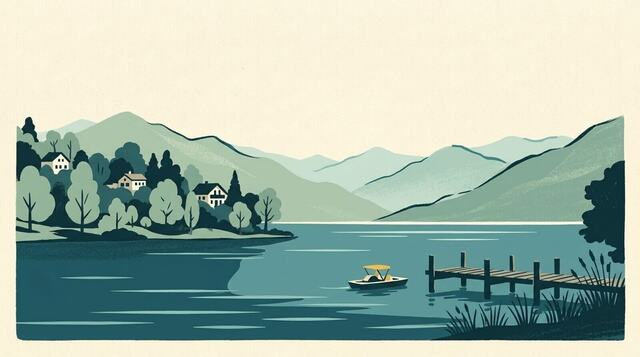
Température de l’eau du lac des Quatre-Cantons aujourd’hui, plage par plage
La température de l’eau du lac des Quatre-Cantons à 70 cm sous la surface, devant chacune des 18 plages suivies, mise à jour toutes les trois heures. D’où vient le chiffre et ce qu’il ne dit pas.
-
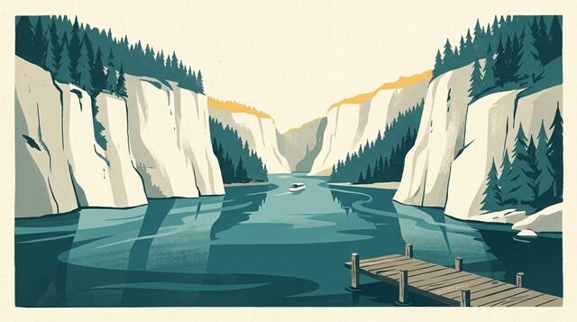
Où se baigner dans le lac des Brenets : la plage, avec l’eau du matin
La plage suivie du lac des Brenets : liste complète avec la température de l’eau du matin, où manger et boire, où louer un bateau ou un paddle.
-

Où se baigner dans le lac de Silvaplana : la plage, avec l’eau du matin
La plage suivie du lac de Silvaplana : liste complète avec la température de l’eau du matin, où manger et boire, où louer un bateau ou un paddle.
-

Qualité de l’eau de baignade au Léman : comment savoir si on peut se baigner
Qui analyse l’eau des plages du Léman, comment lire les classements, et pourquoi une analyse d’août ne dit rien de l’eau en novembre.
-

Température de l’eau du lac Majeur aujourd’hui, et d’où vient le chiffre
La température de l’eau du lac Majeur à 70 cm sous la surface, pour les 7 plages suivies, mise à jour toutes les trois heures. D’où vient le chiffre et ce qu’il ne dit pas.
-

Où se baigner dans le lac de Sarnen : les 2 plages, avec l’eau du matin
Les 2 plages suivies du lac de Sarnen : liste complète avec la température de l’eau du matin, où manger et boire, où louer un bateau ou un paddle.
-

Wakeboard, wakesurf et ski nautique sur le Léman : les écoles et clubs
De Pregny à Thonon, les écoles et clubs qui sortent le bateau pour le wakeboard, le wakesurf et le ski nautique, et pourquoi il faut un lac lisse.
-

Saunas flottants et bateaux-saunas en Suisse : 6 adresses sur quatre lacs
Bateaux-saunas et radeaux-saunas sur le Léman, le lac de Bienne, le lac de Zurich et le lac des Quatre-Cantons : 6 adresses avec lieu de départ et site de réservation.
-

Où se baigner dans le Greifensee : les 3 plages, avec l’eau du matin
Les 3 plages suivies du Greifensee : liste complète avec la température de l’eau du matin, où manger et boire, où louer un bateau ou un paddle.
-
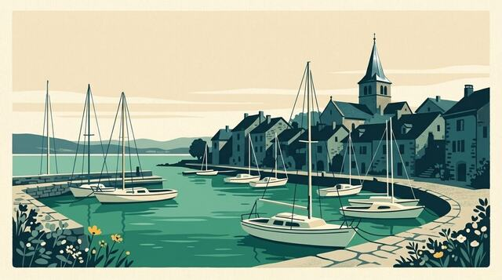
Plages du Léman côté français : d’Évian à Chens-sur-Léman
Les plages de la rive française du Léman, de Meillerie à Chens-sur-Léman, avec la température de l’eau du jour, les restos et les écoles de wake autour.
-
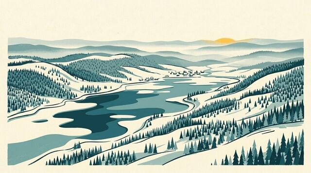
Température de l’eau du lac de Joux aujourd’hui, plage par plage
La température de l’eau du lac de Joux à 70 cm sous la surface, devant chacune des 2 plages suivies, mise à jour toutes les trois heures. D’où vient le chiffre et ce qu’il ne dit pas.
-

Où se baigner dans le lac d’Ägeri : la plage, avec l’eau du matin
La plage suivie du lac d’Ägeri : liste complète avec la température de l’eau du matin, où manger et boire, où louer un bateau ou un paddle.
-

Où se baigner au Domaine des Îles (Sion) : la plage, avec l’eau du matin
La plage suivie du Domaine des Îles (Sion) : liste complète avec la température de l’eau du matin, où manger et boire, où louer un bateau ou un paddle.
-

Température du lac Léman : d’où viennent les chiffres et pourquoi ils varient
Comment l’eau du Léman est calculée à 70 cm devant chaque plage, pourquoi elle peut perdre plusieurs degrés en deux jours, et où la consulter en direct.
-

Température de l’eau du lac de Constance aujourd’hui, et d’où vient le chiffre
La température de l’eau du lac de Constance à 70 cm sous la surface, pour les 12 plages suivies, mise à jour toutes les trois heures. D’où vient le chiffre et ce qu’il ne dit pas.
-

Où se baigner dans le lac de Hallwil : les 4 plages, avec l’eau du matin
Les 4 plages suivies du lac de Hallwil : liste complète avec la température de l’eau du matin, où manger et boire, où louer un bateau ou un paddle.
-
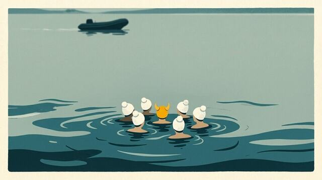
Matériel pour le bain d’hiver : la liste complète avant d’aller au Léman
Bonnet, chaussons et gants en néoprène, bouée, tapis pour se changer, cape et thermos : tout ce qu’il faut emporter pour un bain d’hiver dans le Léman, et pourquoi.
-
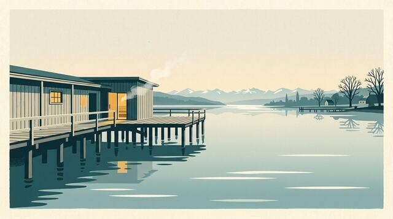
Saunas au bord du lac de Zurich : 5 adresses, de la ville à Rapperswil
Les 5 saunas du lac de Zurich suivis par Mon Lac : sauna du Seebad Enge, Seesauna de Stäfa et bateaux-saunas. Lieu, saison et lien vers chaque site.
-

Où se baigner dans le lac de Bret : la plage, avec l’eau du matin
La plage suivie du lac de Bret : liste complète avec la température de l’eau du matin, où manger et boire, où louer un bateau ou un paddle.
-
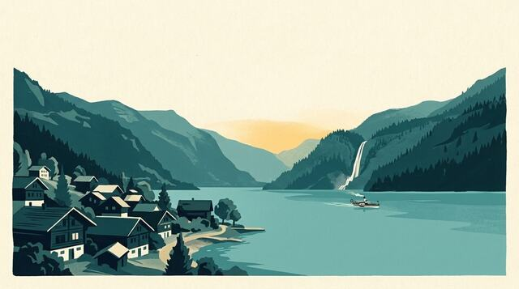
Où se baigner dans le lac de Brienz : les 4 plages, avec l’eau du matin
Les 4 plages suivies du lac de Brienz : liste complète avec la température de l’eau du matin, où manger et boire, où louer un bateau ou un paddle.
-

Température de l’eau du lac de la Gruyère aujourd’hui, et d’où vient le chiffre
La température de l’eau du lac de la Gruyère à 70 cm sous la surface, pour les 5 plages suivies, mise à jour toutes les trois heures. D’où vient le chiffre et ce qu’il ne dit pas.
-

Où se baigner dans le lac de la Gruyère : les 5 plages, avec l’eau du matin
Les 5 plages suivies du lac de la Gruyère : liste complète avec la température de l’eau du matin, où manger et boire, où louer un bateau ou un paddle.
-
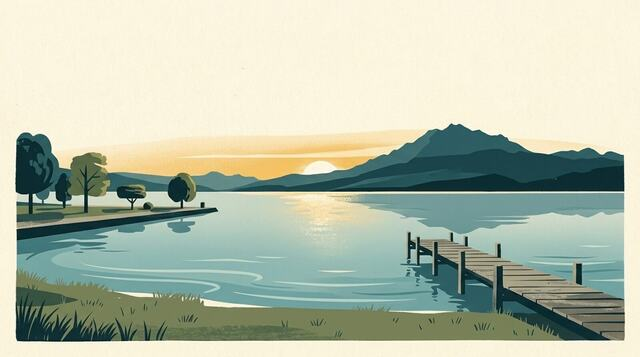
Où se baigner dans le lac de Zoug : les 15 plages, avec l’eau du matin
Les 15 plages suivies du lac de Zoug : liste complète avec la température de l’eau du matin, où manger et boire, où louer un bateau ou un paddle.
-
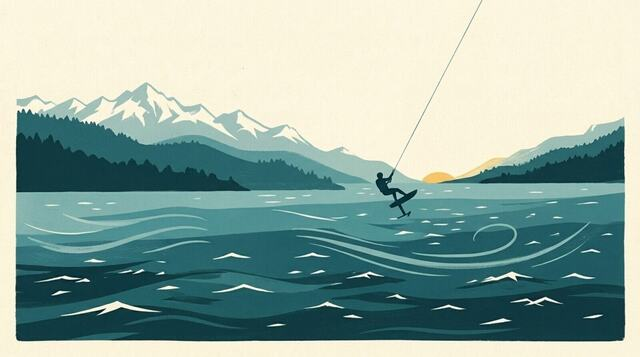
Kitesurf, windsurf et wingfoil sur le Léman : le bon vent et les bons spots
Quelle force de vent pour le kitesurf, le windsurf et le foil sur le Léman, pourquoi la bise fait les meilleurs downwinds, et où louer ou apprendre.
-
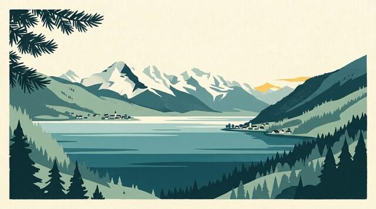
Température de l’eau du lac de Thoune aujourd’hui, et d’où vient le chiffre
La température de l’eau du lac de Thoune à 70 cm sous la surface, pour les 8 plages suivies, mise à jour toutes les trois heures. D’où vient le chiffre et ce qu’il ne dit pas.
-

Où se baigner dans le lac des Quatre-Cantons : les 18 plages, avec l’eau du matin
Les 18 plages suivies du lac des Quatre-Cantons : liste complète avec la température de l’eau du matin, où manger et boire, où louer un bateau ou un paddle.
-

Où se baigner à Genève : les plages du canton, une par une
Des Bains des Pâquis à Hermance, les plages genevoises du Léman avec leurs buvettes, et la température de l’eau du jour pour chacune.
-
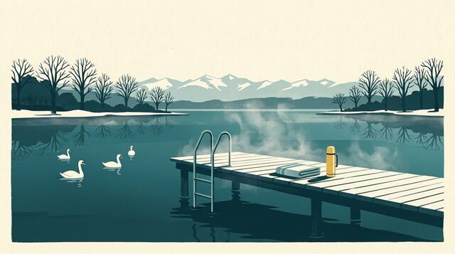
Bain d’hiver à Zurich : plages du lac, eau du jour et saunas pour se réchauffer
Bain d’hiver dans le lac de Zurich et le Greifensee : la règle de durée de la SSS, l’eau du jour plage par plage, les plages suivies et les saunas au bord du lac.
-

Où se baigner dans le lac de Morat : les 4 plages, avec l’eau du matin
Les 4 plages suivies du lac de Morat : liste complète avec la température de l’eau du matin, où manger et boire, où louer un bateau ou un paddle.
-

Plages du lac Majeur : accès, où manger et où louer un bateau
Les 7 plages suivies du lac Majeur : comment y accéder, où manger et boire, où louer un bateau ou un paddle. La température de l’eau a son propre article.
-
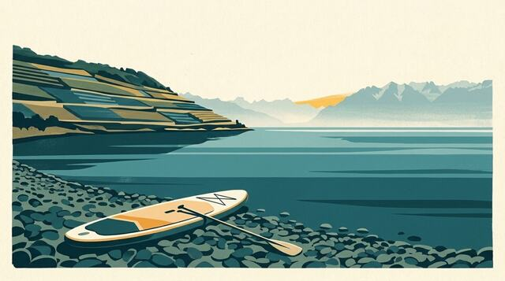
Paddle sur le Léman : quand le lac est assez calme, et où louer
À partir de quel vent le paddle devient difficile sur le Léman, comment lire les rafales, et les loueurs de paddle de Genève à Saint-Gingolph.
-

Température de l’eau du lac de Bienne aujourd’hui, plage par plage
La température de l’eau du lac de Bienne à 70 cm sous la surface, devant chacune des 7 plages suivies, mise à jour toutes les trois heures. D’où vient le chiffre et ce qu’il ne dit pas.
-

Où se baigner dans le lac de Constance : les 12 plages, avec l’eau du matin
Les 12 plages suivies du lac de Constance : liste complète avec la température de l’eau du matin, où manger et boire, où louer un bateau ou un paddle.
-
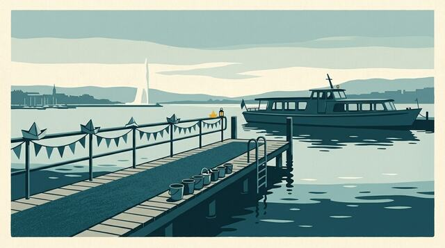
Bain d’hiver dans le Léman : bien débuter à Genève et Lausanne
Combien de temps rester dans l’eau, comment entrer, où se baigner et se réchauffer à Genève et Lausanne : le guide du bain d’hiver dans le Léman, avec l’eau du jour plage par plage.
-

Température de l’eau du lac de Lugano aujourd’hui, plage par plage
La température de l’eau du lac de Lugano à 70 cm sous la surface, devant chacune des 14 plages suivies, mise à jour toutes les trois heures. D’où vient le chiffre et ce qu’il ne dit pas.
-

Plages du lac de Joux : accès, où manger et où louer un bateau
Les 2 plages suivies du lac de Joux : comment y accéder, où manger et boire, où louer un bateau ou un paddle. La température de l’eau a son propre article.
-

La bise sur le Léman : ce qu’elle change pour la baignade, le paddle et le kite
D’où vient la bise, comment la reconnaître et à partir de quand elle gêne la baignade et le paddle, alors que kitesurfeurs, windsurfeurs et foilers l’attendent.
-

Température de l’eau du lac de Zurich aujourd’hui, plage par plage
La température de l’eau du lac de Zurich à 70 cm sous la surface, devant chacune des 20 plages suivies, mise à jour toutes les trois heures. D’où vient le chiffre et ce qu’il ne dit pas.
-

Où se baigner dans le lac de Bienne : les 7 plages, avec l’eau du matin
Les 7 plages suivies du lac de Bienne : liste complète avec la température de l’eau du matin, où manger et boire, où louer un bateau ou un paddle.
-

Où se baigner dans le lac de Thoune : les 8 plages, avec l’eau du matin
Les 8 plages suivies du lac de Thoune : liste complète avec la température de l’eau du matin, où manger et boire, où louer un bateau ou un paddle.
-

Buvettes et restos au bord du Léman : nos adresses les pieds dans l’eau
Les terrasses au bord de l’eau de Genève, La Côte, Lausanne, la Riviera et la rive française, avec leurs saisons d’ouverture.
-

Saunas au bord du Léman : les 11 adresses, de Genève à Vevey
Les 11 saunas au bord du Léman suivis par Mon Lac : yourtes, tonneaux, bateau-sauna, bains historiques. Saison, lieu et lien vers le site de chacun.
-
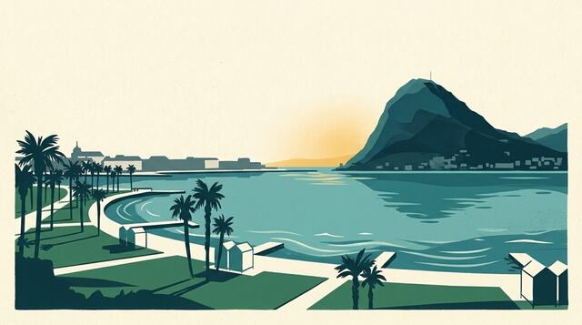
Où se baigner dans le lac de Lugano : les 14 plages, avec l’eau du matin
Les 14 plages suivies du lac de Lugano : liste complète avec la température de l’eau du matin, où manger et boire, où louer un bateau ou un paddle.
-

Choc thermique : les 90 premières secondes dans l’eau froide du Léman
Ce que fait le corps en entrant dans une eau à 10 °C, pourquoi il ne faut pas plonger, comment respirer pendant la première minute, et pourquoi voir un médecin avant de commencer.
-

Température de l’eau du lac de Neuchâtel aujourd’hui, plage par plage
La température de l’eau du lac de Neuchâtel à 70 cm sous la surface, devant chacune des 15 plages suivies, mise à jour toutes les trois heures. D’où vient le chiffre et ce qu’il ne dit pas.
-

Où se baigner dans le lac de Neuchâtel : les 15 plages, avec l’eau du matin
Les 15 plages suivies du lac de Neuchâtel : liste complète avec la température de l’eau du matin, où manger et boire, où louer un bateau ou un paddle.
-

Où se baigner dans le lac de Zurich : les 20 plages, avec l’eau du matin
Les 20 plages suivies du lac de Zurich : liste complète avec la température de l’eau du matin, où manger et boire, où louer un bateau ou un paddle.